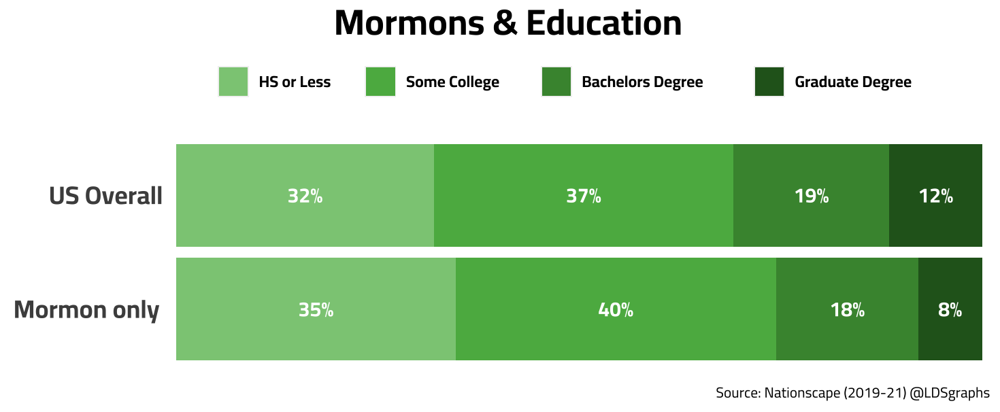
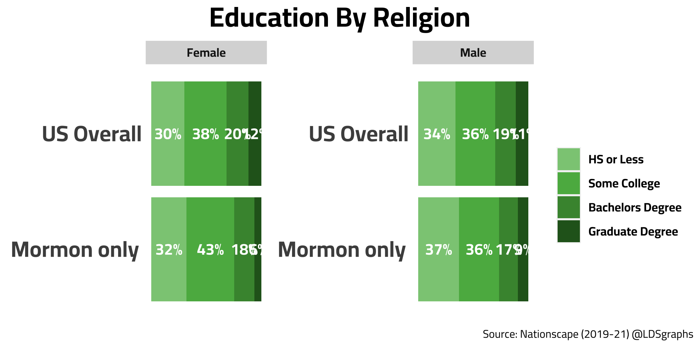

Are Mormons Actually More Educated?

Introduction
I’ve been seeing a few places that the perception is that Mormons have a large middle class group “with above average education levels”, but after seeing some income data from Nationscape I was curious what nationscape data had for Mormon education levels. Because, in a previous post, we saw Mormon’s having a more modest salary compared to previous survey results.
Data
The data in this post is from the Nationscape which has data from 2019-2021. Because of the large sample sizes of the project, we are able to get a several thousand Mormon respondents (6452 to be exact) which is significantly higher than many other studies such as the religious landscape study by Pew Research Center.
Charts
Personally, I think the “Mormons are more educated” idea lingers because the last time Mormons were prominently in the national US news was in 2012 when Mitt Romney ran for president.
(My suspicion is confirmed in the google trends chart above.)
Just after the first time Romney ran in 2008, Pew Research Center published a Mormon demographic profile which had findings showing a large middle class income bracket and higher than average education levels shown in the figure below:

My theory is that “mormons are more educated” and “have a strong income in the middle class” were picked up in large scale in 2012 from this report and cemented in people’s minds ever since.
One thing I’ll note about the Pew study is that with a sample size of around 500 you’ll have a margin of error of around +/- 5pts. Looking at the nationscape data and the 6500 respondents, that number drops to +/- 1pt according to this tool at least. So obviously, as our N size increase, our estimates are less error prone.
Now lets look at Nationscape…

Overall, Mormons don’t appear to be as educated as the average american with slightly more people not attending college. This isn’t a large gap as the majority of Mormon’s attend at least some college, but again, so do most people in the American population.
It’s possible this could be a trend where initially (2009) mormons were more educated and had more money, but recently have less money and are less educated compared to the US population. It also could be that some of the higher educated and higher income Mormons recently left the religion.

Looking specifically at the gender cut, unsurprisingly, the “some college” group is driven by women who perhaps dropped out of college after having children. As is the trend with the national, Mormon women are a bit more likely to be educated beyond high school than Mormon men.
While these charts are interesting, I look forward to confirming these findings with other data sources.
Discussion
Did you have the perception that American Mormons were more educated than the average American?